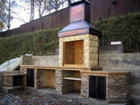

О барбекю
Что такое барбекю  Термин "барбекю" произошел от английского термина "barbecue" или "bbq", что значит "приготовление каких-либо продуктов (будь то мясо или птица, рыба или овощи) на гриле." В России термин барбекю приобрел несколько иное значение: большинство россиян под термином барбекю понимают, что это садовая печь, расположенная на открытом воздухе, в летнем домике или в беседке, приспособленная под приготовление пищи. Другими словами, барбекю из кирпича является более совершенным и красивым аналогом всем известного мангала.Как уже было сказано, печь барбекю может представлять собой достаточно сложную конструкцию, включающую в себя очаг с грилем, варочную печь, духовку, коптильню, тандыр и т.п. Помимо этого в конструкции каждой печи-барбекю, как правило, предусмотрено наличие свободных рабочих поверхностей - столешниц - необходимых для размещения на них компонентов приготавливаемого блюда, ножей, вилок и другой кухонной утвари, требующейся для приготовления пищи. Также часто в комплексной печи барбекю встроена мойка и сушилка для помытой посуды.
Топка печи-барбекю предназначена для приготовления пищи на тепле древесных углей. Приготовляемую пищу размещают на вертеле, шампурах или на гриле. Печь-барбекю не накапливает тепло и греет, как камин или костер, когда в ней что-то горит, поэтому печь-барбекю служит для быстрого приготовления блюд из мяса, хлеба, рыбы и пр. с односторонним нагревом углями снизу. Приготовляемые в печи-барбекю блюда следует постоянно переворачивать для равномерного прогревания.
Гриль барбекю следует располагать на высоте, наиболее удобной для приготовления пищи. Если решетка будет расположена слишком низко, Вам придется сильно наклоняться; если она будет слишком высоко, Вам будет неудобно обращаться с лежащими на ней продуктами или Ваше лицо будет чересчур близко к горячим углям.
Сам гриль, а также поддон для углей должны опираться на выступы кирпичей или на металлические стержни, вмурованные в кладку. Решетку и поддон следует выполнять съемными по той причине, что на зиму, когда барбекю не используется, их следует хорошо чистить и убирать на хранение для предотвращения коррозии.
Оригинальным решением является строительство отдельного шкафа под посуду рядом с барбекю из того же материала, что и сама печь-барбекю. Помимо, конечно, чисто функциональных преимуществ такой шкаф будет неповторимым величественным украшением вашего барбекю-комплекса.
Как расположить барбекю на участке
Место расположения барбекю должно быть не слишком удалено от дома и легко доступно из кухни, поскольку понадобится приносить к барбекю кухонные принадлежности, посуду и воду.
Не размещайте барбекю под развесистыми деревьями, т.к. чрезмерно высокая температура дымовых газов может обжечь их.
Если печь барбекю будет установлена на газоне, то трава, скорее всего, будет вытоптана ввиду интенсивного движения людей. Поэтому поверхность вокруг стационарно размещаемых барбекю лучше вымостить плитками или кирпичом. Постарайтесь сделать так, чтобы на окружающем пространстве могли достаточно свободно размещаться несколько человек. В случае нехватки пространства, спланируйте его так, чтобы Ваши гости могли свободно передвигаться вокруг.